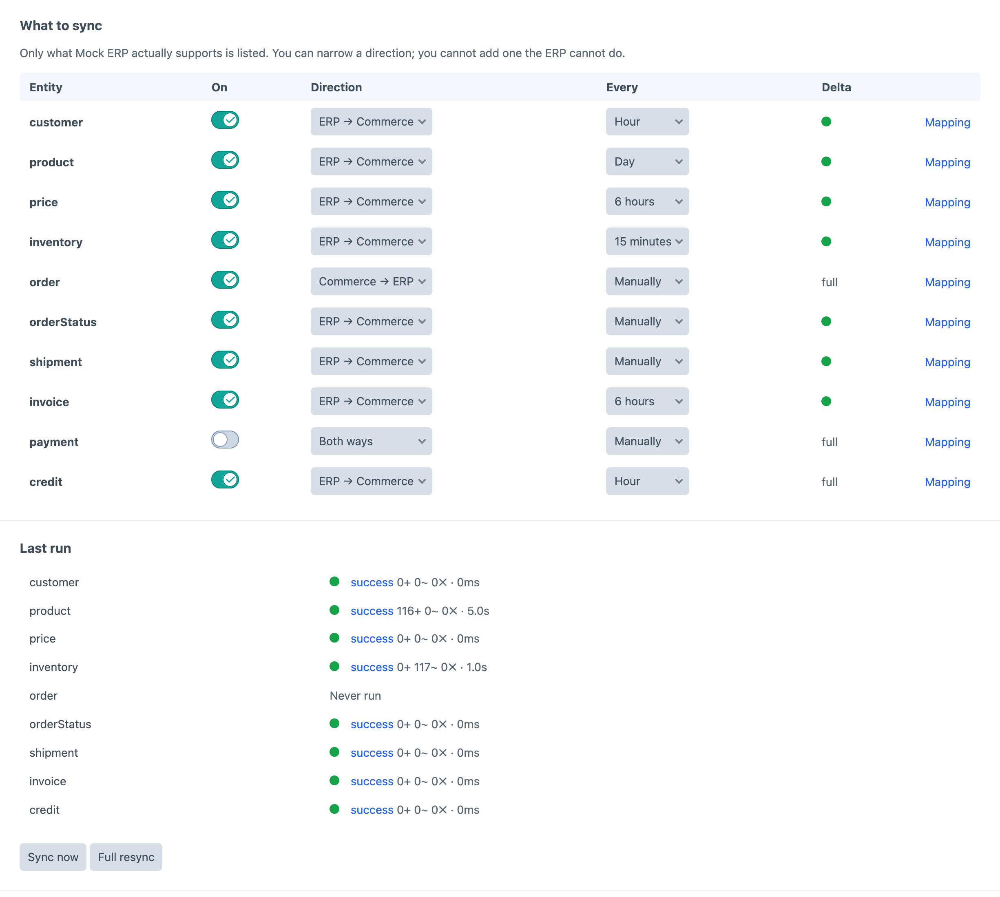
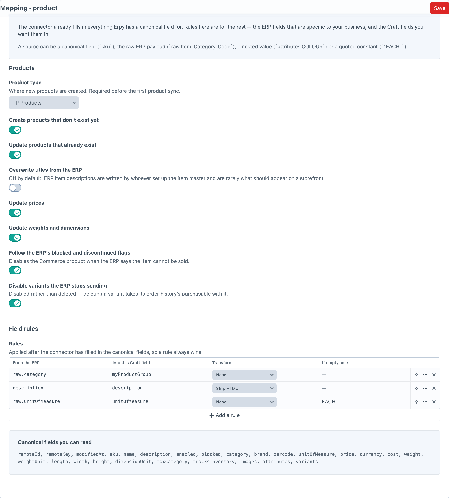
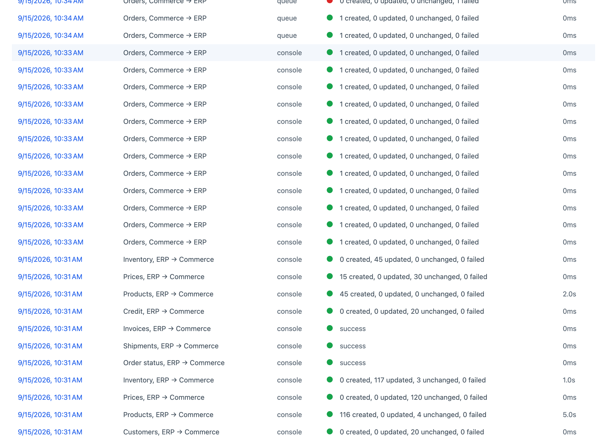
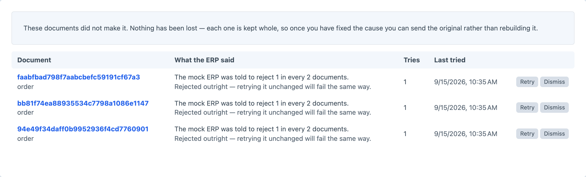

Craft Commerce 5 · ERP integration
Erpy
The ERP gateway
for Craft Commerce.
One sync engine, one mapping screen, one log — and a free connector for every major ERP.
$149 · $129/year
Craft 5.3+ · Commerce 5 · PHP 8.2+
The ERP gateway
for Craft Commerce.
One sync engine, one mapping screen, one log — and a free connector for every major ERP.
The retry logic, the duplicate guard, the paging, the field mapping and the log are the same problem every time. Erpy solves them once; what differs per vendor is a small free add-on that only has to read one API.
Install Erpy once, then the add-on for the ERP you run. Each one only translates its vendor’s API — the engine, the mapping and the log are Erpy’s, so they are free.
 AFASAFAS Profit
AFASAFAS Profit Business CentralDynamics 365
Business CentralDynamics 365 Exact OnlineExact Online
Exact OnlineExact Online MYOBAcumatica & Exo
MYOBAcumatica & Exo OdooCommunity & Enterprise
OdooCommunity & Enterprise PriorityPriority ERP
PriorityPriority ERP Unit4Unit4 ERP
Unit4Unit4 ERPNot a remembered check that two workers can race — a unique index the database refuses to break.
A record edited while a sync is in flight is the one everybody loses. Erpy re-reads it instead.
Advance to the end and the record edited mid-run falls in the gap. Nothing is wrong, nothing is logged, and the price stays stale until somebody notices.
Advance to the start, plus two minutes of overlap, and it is read again next time — for the cost of one content-hash comparison. A failed run moves nothing at all.
Several of these ERPs are configured per customer. A connector cannot be right about your tenant in advance — so it does not have to be.
A rule whose target is a canonical field overwrites what the connector read, before the document reaches Commerce. A wrong field name is an afternoon, not a release cycle.
Including the one you want after an incident: which completed orders never reached the ERP.
The matrix is built from what the connector declares. You can narrow a direction; you cannot invent one the ERP does not have.

Source, target, transform and a fallback — over the untouched ERP payload as well as the canonical document.

Created, updated, unchanged and failed — per entity, per run, whether it started from a button, the queue, cron or a webhook.

The document is kept whole. Fix the cause, press Retry, and the original goes — not a reconstruction of it.
